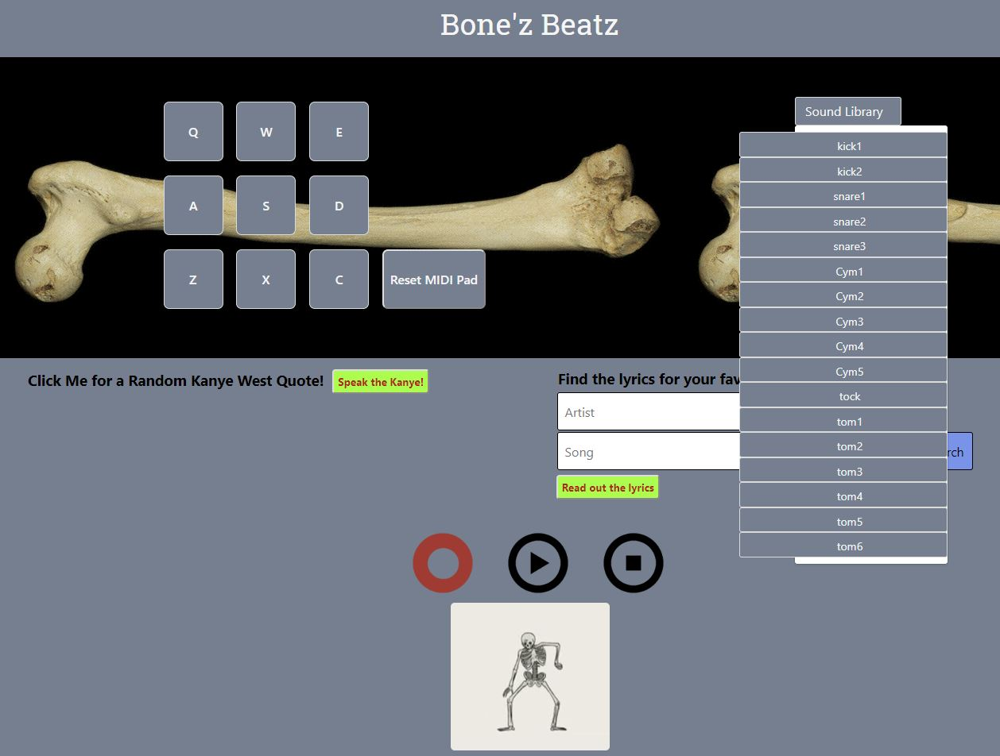
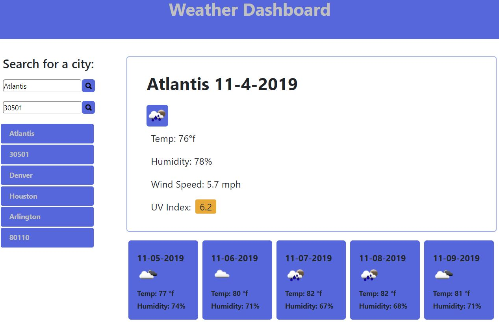
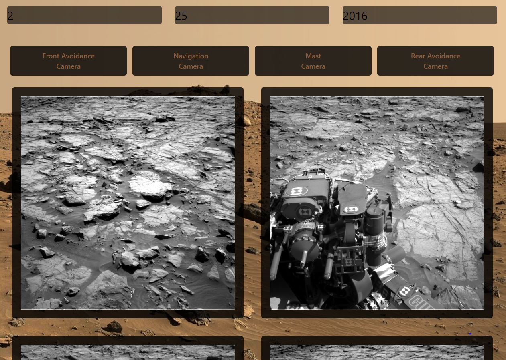

After a decade of wandering, unsatisfied from one career opportunity
to the next I believe I'll be sitting tight with coding and
robotics. I've flirted with these 2 for ages, and decided in 2017 to
start pursuing them at the hobby level. I bought an arduino uno,
attended an intro course at a local maker space, and absolutely fell
in love.
For the next couple of years, I spent every bit of expendable income on electronic components, tools, and machines to expand my knowledge and capabilities in regards to designing and fabricating electronics. My areas of focus included 3d printing, 3d design with Fusion360, coding with the arduino IDE, and pcb development and manufacturing.
In 2019 I attended the Bay Area Maker Faire to further fraternize with the maker/developer community, and was inspired by all of the people I met that had successfully made a career out of a passionate hobby. Returning home, my drive was set on fire. I needed all of the new arduino nano boards, the Nvidia Jetson, an oscilloscope, and to dip my toes into machine learning and AI. It was obvious funding and education were priority number one, which has sent my down my current path of transitioning from print floor management to software engineer, and enrolling in a coding bootcamp to solidify and expand the basics before treading into more advanced waters.
In the meantime, let's make some stuff we're excited about.
For the next couple of years, I spent every bit of expendable income on electronic components, tools, and machines to expand my knowledge and capabilities in regards to designing and fabricating electronics. My areas of focus included 3d printing, 3d design with Fusion360, coding with the arduino IDE, and pcb development and manufacturing.
In 2019 I attended the Bay Area Maker Faire to further fraternize with the maker/developer community, and was inspired by all of the people I met that had successfully made a career out of a passionate hobby. Returning home, my drive was set on fire. I needed all of the new arduino nano boards, the Nvidia Jetson, an oscilloscope, and to dip my toes into machine learning and AI. It was obvious funding and education were priority number one, which has sent my down my current path of transitioning from print floor management to software engineer, and enrolling in a coding bootcamp to solidify and expand the basics before treading into more advanced waters.
In the meantime, let's make some stuff we're excited about.
Bonez Beatz

Bonez Beats is an basic midi pad. The user chooses audio
samples from the sound library drop-down list, and assigns the
desired audio to a keypress. Once the user has sounds
assigned, a record function logs keypresses into an array, and
the playback function
Weather App

A simple weather forecast app that uses weather data from
openweathermap.
The user inputs either a city or zip code, and the page populates
with the current weather conditions, along with a 5 day forecast.
Additional functionality includes auto-saving search history.
Curiosity Pics

An app that requests data from NASA's image database. Specifically,
images from the curiosity rover. The user
refines the search by typing a date into the input, and selecting
a camera. The page populates with all of the images taken on the input date,
by the camera the user selected.